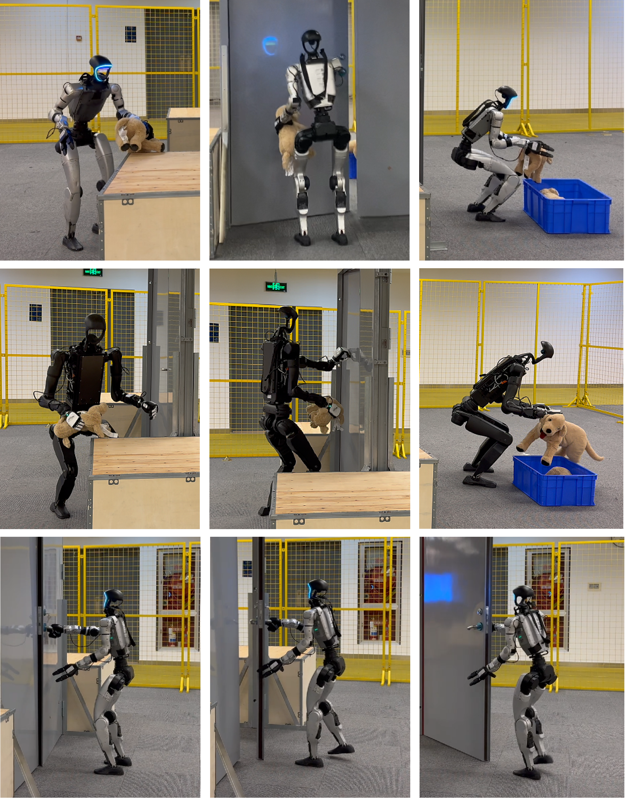

Simulation Experiments


Zero-shot generalization and real-world capabilities. Top: Robust zero-shot generalization across seven humanoids with diverse DoFs, dynamics, and morphologies. Bottom: Flexible teleoperation enables long-horizon whole-body loco-manipulation tasks.
Locomotion
Zero-shot Cross-Embodiment Control
Teleoperation
Whole-Body Control via Human Commands
Loco-Manipulation
Long-Horizon Whole-Body Tasks
Real-World Experiments
Zero-shot generalization across seven diverse real-world humanoid robots with varying degrees of freedom, dynamics, and morphological structures.
Abstract
Method

XHugWBC Framework. Our approach combines physics-consistent morphological randomization, unified state-action representation, and graph-based policy architecture for cross-humanoid whole-body control.